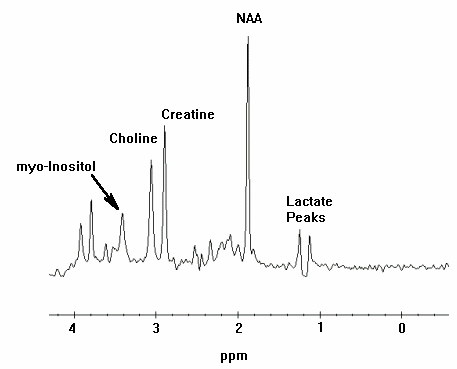
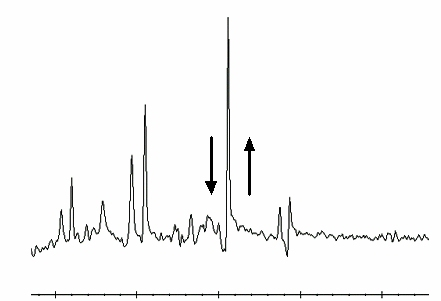

Operating Documentation
Direction 5440001-3, Rev# 6
Signa HDxt Service Methods
Module Version 4.0, Version Date 6/11/09
Operating Documentation |
| Required Persons | Preliminary Reqs | Procedure | Finalization |
|---|---|---|---|
| 1 | Not Applicable | 30 mins | Not Applicable |
For Versions 11.x and 12.x the PROBE options have changed. Prior to 11.x, both PROBE-P and PROBE-S options were included with Catalog M3090MA. After 11.x the Probe-P and Probe-S options were separated. Parts of the calibration procedure will only apply to the option(s) present. The two catalogs being used are:
Probe-P option is now part of M3090MA
Probe-S option has a separate Catalog of M3333WH
| NOTE: | Single Channel HEAD coil must be used for all of the following calibration procedures and SNR tests. |
| Item | Qty | Effectivity | Part# | Manufacturer | |
|---|---|---|---|---|---|
| MRS Phantom, (2152220), without the loader, is required for Probe SNR and is used for the Tuning process. | 1 | - | - | - | |
| Condition | Reference | Effectivity |
|---|---|---|
Magnet is shimmed and acceptance specifications have been met. | - | - |
This material applies to 1.5T Signa EXCITE systems or above as well as Signa 3.0T EXCITE systems and describes two separate hydrogen ONLY spectroscopy (Probe/SV) procedures:
Echo Peak Location Calibration (automated Probe Tuning script) for BRM ONLY
Echo Peak Location Calibration (automated Probe Tuning script) for TRM ONLY
Probe SNR performance test
The Tuning procedure determines the values of control variables (CVs) that are necessary for Probe/SV scanning. Each Tuning scan will result in 18 coordinate values (three sets of six). Within each set of six, the first four values are described as A, C, B, and D. The 5th is E or - Verification, and the 6th is F or + Verification. Additional calculations (using the first four values of each set) are performed, and the resulting values will be automatically entered into a calibration file producing site specific Control Variables. The SNR procedure will be performed after the Tuning procedure.
| NOTE: | The PROBE-S Tuning procedure will only work if the site has purchased catalog M3333WH. The following procedure will not run if the PROBE-P option was purchased. |
Position the phantom on the head support in the head coil with the temperature strip visible. Do not use the tuning ring or head loader with the MRS phantom. Use foam padding as necessary to center the phantom in the head coil. Phantom-centering (up/down/left/right/in/out) within 5mm of Isocenter in all directions is important. Run any head localizer to ensure the phantom is properly centered before beginning the Probe Tuning procedure.
| NOTE: | Landmark MRS phantom, on DQA - Landmark, else psd download errors will occur! |
Select the [TOOLS] icon. In the MR Service Desktop Manager select [Calibration], then [Probe/S Tune]. On the right side of the menu, click the link labeled [Click here to start this tool].
9.x, 10.x or greater: To start the Probe/S Tune tool from the Service Browser, follow the instructions on Illustration 1.
Illustration 1: Starting the Probe/S Tune from the Service Browser

Refer to Data Sheets for the Tuning Data Sheet.
The Probe/S Tuning Window appears, as shown below.
Probe-S Cal Started
xshim=# yshim=# zshim=#
APS: R1=## R2=## TG=### CF=########
The tuning process will proceed automatically for each axis:
delta#_val: #.##
The checking process will proceed automatically for each axis:
# AXIS Calibration completed Successfully
A message will appear after completion of the 3 axis:
Probe/S Tuning completed successfully.
Results are stored in the /usr/g/caldir/probes_cal.log
If Probe-S cal does not complete successfully: rescan, if still failing re-run grafidy.
Press [Enter] to quit
To view the complete results (excluding APS information):
Select [C Shell..].
Type: more /usr/g/caldir/probes_cal.log<Enter>
The specification criteria (absolute value) are:
Single delta parameter, I < .8 I
Sum of all delta parameters, I < 1.0 I
Set up the SERVICE scan prescription according to the steps below or refer to Manual Entry Probe/SV SNR Protocols.
| NOTE: | The MRS phantom must be used for all SNR procedures. Position the MRS phantom on the head support in the head coil with the temperature strip visible. Do not use the tuning ring or head loader. Use foam padding as necessary to center the phantom in the Head Coil. Phantom-centering (up/down/left/ right/in/out) is within 5mm of ISOcenter in all directions is important. Run any head localizer to ensure the phantom is properly centered before beginning the Probe- SNR procedure. |
| NOTE: | After positioning the phantom in the center of the bore, you must wait at least 5 minutes before starting the PROBE calibration procedure to reduce the effect of long time-constant eddy currents. |
If whole mode, select [Whole], or
If zoom mode, select [zoom].
[Save Series].
[Prepare to Scan].
Click [Research Operations], then right-click.
[Display CVs]. Highlight the CV Name and enter the following:
| CV Name: opfov<Enter>, CV Value: 240<Enter> (24) - (default in protocol) |
| CV Name: opte<Enter>, CV Value: 30000<Enter> (30) - (default in protocol) |
| CV Name: optr<Enter>, CV Value: 2000000<Enter> (2002) - (default in protocol) |
| CV Name: tempC<Enter>, CV Value: ##<Enter> (greenest portion of temperature strip) |
| CV Name: deltax<Enter>, CV Value: verify per tuning results<Enter> |
| CV Name: deltay<Enter>, CV Value: verify per tuning results<Enter> |
| CV Name: deltaz<Enter>, CV Value: verify per tuning results<Enter> |
[Accept].
Right-click [Research Operations], then[Download].
[Scan] (the system will Auto Prescan then Scan).
Select Message Window, which is located in the upper left-hand corner of the scan desktop. Record R1, R2, TG, AX, (if present, record FWHM, WS Angle, WS%) on the Data Sheets. Close the window.
SNR is not annotated on the auto viewer; you must access the image from the Browser on the [Display (Advantage Windows) Desktop]. On this desktop, click on [Browser], [Sort], [Sort examinations by date]. Once you have done this, the most current exams will be displayed in the upper window. Select the most current Image from the most current Series from the lower window, and click on [Viewer]. Select [Format], then click on the single box (in the upper left corner).
Record the displayed results on the Data Sheets for Probe-S SNR.
Retain a hard copy of the Probe SNR image for reference. This can be used to make a comparison of the Cr SNR from these most recent Probe-S and Probe-P scans with the Cr SNR previous/future scans.
| NOTE: | It is imperative that a minimum of three scans be performed (back-to-back) to get an estimated average Probe-S SNR. |
For the TwinSpeed, repeat the procedure with the ZOOM gradient mode.
Set up the Service scan prescription by following the instructions below, or refer to Manual Entry Probe/SV SNR Protocols.
| NOTE: | The MRS Phantom must be used for all SNR procedures. Position the MRS phantom on the head support in the head coil with the temperature strip visible. Do not use the tuning ring or head loader. Use foam padding as necessary to center the phantom in head coil. Phantom-centering (up/down/left/right/in/out) within 5mm of ISOcenter in all directions is important. Run any head localizer to ensure that the phantom is properly centered before beginning the PROBE SNR procedure. |
| NOTE: | After positioning the phantom in the center of the bore, you must wait at least 5 minutes before starting the PROBE calibration procedure to reduce the effect of long time-constant eddy currents. |
This is the alternate proprietary procedure available for GE use, and to sites with a valid Advanced Service Package Limited License.
If whole mode, select [Whole], or
If zoom mode, select [Zoom].
[Save Series].
[Prepare to Scan] or [Download] if required.
Select [Research Operations] using the mouse, then right-click.
[Display CVs]. Highlight the CV Name and enter the following:
| CV Name: opfov<Enter>, CV Value: 240<Enter> (24) - (default in protocol) |
| CV Name: opte<Enter>, CV Value: 37000<Enter> (37) - (default in protocol) |
| CV Name: optr<Enter>, CV Value: 2000000<Enter> (2000) - (default in protocol) |
| CV Name: tempC<Enter>, CV Value: ##<Enter> (greenest portion of temperature strip) |
| CV Name: deltax<Enter>, CV Value: verify per tuning results<Enter> |
| CV Name: deltay<Enter>, CV Value: verify per tuning results<Enter> |
| CV Name: deltaz<Enter>, CV Value: verify per tuning results<Enter> |
[Accept].
[Research Operations][Download].
<Prepare to Scan>, if required.
<Scan> (the system will Auto Prescan then Scan).
Select Message Window, which is located in upper left-hand corner of the scan desktop. Record R1, R2, TG, AX, (if present, record FWHM, WS Angle, WS%) on the Data Sheets. Close the window.
SNR is not annotated on the auto viewer; you must access the image from the Browser on the [Display (Advantage Windows) Desktop]. On this desktop, click on [Browser], [Sort], [Sort examinations by date]. Once you have done this, the most current exams will be displayed in the upper window. Select the most current Image from the most current Series from the lower window, and click on [Viewer]. Select [Format], then click on the single box (in the upper left corner).
Record the displayed results on the Data Sheet for Probe-P SNR.
Retain a hard copy of the Probe SNR image for reference. This can be used to make a comparison of the Cr SNR from these most recent Probe-S and Probe-P scans with the Cr SNR previous/future scans.
| NOTE: | It is imperative that a minimum of three scans be performed (back-to-back) to get an estimated average Probe-P SNR. |
For the TwinSpeed, repeat the procedure with the ZOOM gradient mode.
| NOTE: | Refer to the Overview concerning type-in PSD’s. |
This section contains Illustrations of Probe SNR Spectra, both incorrectly tuned and correctly tuned to familiarize the user with what a good spectrum looks like. During tuning or SNR troubleshooting, it may be necessary for a site to back up the original echoloc.dat file. This backup process requires renaming the file, otherwise, it will be overwritten during the tuning calibration. Additional information can be obtained concerning the cause of an AWS (Auto-Water Suppression) failure by logging the messages generated during the Probe APS. A site may be required to send Probe SNR raw data to an expert for review. This section explains the P raw file location process and how to transfer it.
Errors in the Probe Tuning Calibration Procedure can introduce changes in the appearance of the resulting Probe SNR spectra. This section contains example spectra from a Probe-P SNR protocol using the MRS phantom. Illustration 2 shows a correctly-tuned spectra. Pay particular attention to the base (left and right) of the NAA (NA) peak; this is the largest peak located at the center of the spectrum.
Refer to Illustration 3 and Illustration 4 to view spectra with an un-calibrated tuning parameter (a delta was offset + or - from the correct value by 0.5 units).
Illustration 2: Correctly-Tuned Probe SNR Spectra

Illustration 3: Incorrectly-Tuned Probe SNR Spectra

Illustration 4: Incorrectly-Tuned Probe SNR Spectra

To perform Probe Tuning File and Backup, follow these steps:
At the MR Service Desktop, click on [C-Shell...].
At the prompt, enter the following:
cd /usr/g/caldir<Enter>
mv echoloc.dat echoloc.bak1<Enter>
Close the [C Shell..].
| NOTE: | The echoloc.dat file does not exist for initial software loads. |
The actual file that contains the Probe Calibration values is in the caldir directory as probepfix.dat. The unlabeled values are deltax, deltay, and deltaz.
For the TwinSpeed, the file extensions .WHOLE and .ZOOM should be used and maintained when moving files.
| NOTE: | Additional information can be obtained concerning the cause of an AWS (Auto-Water Suppression) failure by logging the messages generated during the Probe APS. |
On the MR Service Desktop, click on [C Shell...].
Create a directory to hold the log file by entering the following:
cd /usr/g<Enter>
mkdir probe_data<Enter>
cd probe_data<Enter>.
Log in to the MGD AGP and direct the output to a file and to the screen. Use the grave symbol (`) and the pipe symbol (|) on the keyboard where indicated below. Local is the lowercase “l” key.
rlogin agp | tee agp_log<Enter>.
Log in using the user name agp , then press <Enter>. When prompted, enter the password agpservice and press <Enter>.
At this point logging is running. DO NOT type anything in the AGP window. Watch the AGP messages appear on the screen; everything will be logged into the file entered after the tee command (tee agp_log). This file will be overwritten each time.
Select the Rx Manager icon.
Run Auto Prescan (APS).
When done, type logout in the AGP window. This will disconnect the AGP from the C Shell. A message will appear confirming logoutConnection closed.
To view the log file created, verify that the current directory is /usr/g/probe_data.
Type: more agp_log and press <Enter>.
Close the C Shell when you’re done.
The log file can be sent to the OLC, or e-mailed to whomever the site is working with to resolve problems.
| NOTE: | During the troubleshooting process, the site may be required to identify the P raw data files generated when Probe SNR was performed. These files may be helpful in determining a reason for SNR failure. |
This portion of the procedure should be performed after running a Probe SNR protocol to facilitate P raw file identification.
At the Service Desktop Manager, click on [C-Shell...].
At the prompt enter the following:
cd /usr/g/mrraw<Enter>
ls -lt P*| head<Enter>
The most recent P files will be displayed. Record the Probe raw data file (P#####.7). The P file’s size is ~449584.
Close the C Shell when you're done.
No finalization steps.